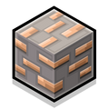

The synchronous
The pendulum
Deep in the dark where the stone holds tight, The silent ore awaits the light. A block of grey with veins of gold, A pixelated prize untold. By iron picked, by furnace tried, The treasures of the deep abide. From humble dust to armor bright, It rises up to win the fight.

Iron
Diamond
Emerald
Redstone
Without it = nothing.
Define of constant and precise
Something that only higher humans can have.
Mc.pvper
Restoner
modder
AI enables computers to perform tasks that normally require human intelligence.
AI can generate structures, create NPCs, and assist with building.
Yes, with certain tools and mods.